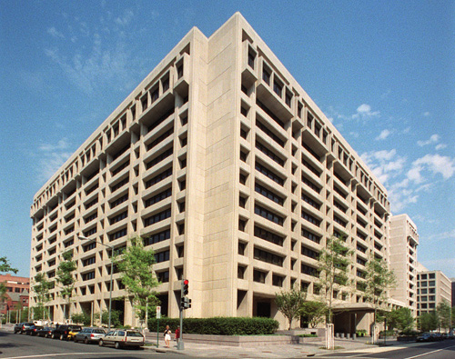

Section 6.1 "What Is the International Monetary System?" discusses how, during the 1930s, the Great Depression resulted in failing economies. The fall of the gold standard led countries to raise trade barriers, devalue their currencies to compete against one another for export markets and curtail usage of foreign exchange by their citizens. All these factors led to declining world trade, high unemployment, and plummeting living standards in many countries. In 1944, the Bretton Woods Agreement established a new international monetary system. The creation of the International Monetary Fund (IMF) and the World Bank were two of its most enduring legacies.
The World Bank and the IMF, often called the Bretton Woods Institutions, are twin intergovernmental pillars supporting the structure of the world’s economic and financial order. Both have taken on expanding roles, and there have been renewed calls for additional expansion of their responsibilities, particularly in the continuing absence of a single global monetary agreement. The two institutions may seem to have confusing or overlapping functions. However, while some similarities exist (see the following figure), they are two distinct organizations with different roles.
“Despite these and other similarities, however, the Bank and the IMF remain distinct. The fundamental difference is this: the Bank is primarily a development institution; the IMF is a cooperative institution that seeks to maintain an orderly system of payments and receipts between nations. Each has a different purpose, a distinct structure, receives its funding from different sources, assists different categories of members, and strives to achieve distinct goals through methods peculiar to itself.”David D. Driscoll, “The IMF and the World Bank: How Do They Differ?,” International Monetary Fund, last updated August 1996, accessed February 9, 2011, http://www.imf.org/external/pubs/ft/exrp/differ/differ.htm (emphasis added). This section explores both of these institutions and how they have evolved in the almost seventy years since their creation.
Figure 6.1 IMF Headquarters in Washington, DC
Source: International Monetary Fund, 2011.
The architects of the Bretton Woods Agreement, John Maynard Keynes and Harry Dexter White, envisioned an institution that would oversee the international monetary system, exchange rates, and international payments to enable countries and their citizens to buy goods and services from each other. They expected that this new global entity would ensure exchange rate stability and encourage its member countries to eliminate the exchange restrictions that hindered trade. Officially, the IMF came into existence in December 1945 with twenty-nine member countries. (The Soviets, who were at Bretton Woods, refused to join the IMF.)
In 1947, the institution’s first formal year of operations, the French became the first nation to borrow from the IMF. Over the next thirty years, more countries joined the IMF, including some African countries in the 1960s. The Soviet bloc nations remained the exception and were not part of the IMF until the fall of the Berlin Wall in 1989. The IMF experienced another large increase in members in the 1990s with the addition of Russia; Russia was also placed on the IMF’s executive committee. Today, 187 countries are members of the IMF; twenty-four of those countries or groups of countries are represented on the executive board.
The purposes of the International Monetary Fund are as follows:
In addition to financial assistance, the IMF also provides member countries with technical assistance to create and implement effective policies, particularly economic, monetary, and banking policy and regulations.
A Special Drawing Right (SDR)An international monetary reserve asset of the IMF. is basically an international monetary reserve asset. SDRs were created in 1969 by the IMF in response to the Triffin Paradox. The Triffin Paradox stated that the more US dollars were used as a base reserve currency, the less faith that countries had in the ability of the US government to convert those dollars to gold. The world was still using the Bretton Woods system, and the initial expectation was that SDRs would replace the US dollar as the global monetary reserve currency, thus solving the Triffin Paradox. Bretton Woods collapsed a few years later, but the concept of an SDR solidified. Today the value of an SDR consists of the value of four of the IMF’s biggest members’ currencies—the US dollar, the British pound, the Japanese yen, and the euro—but the currencies do not hold equal weight. SDRs are quoted in terms of US dollars. The basket, or group of currencies, is reviewed every five years by the IMF executive board and is based on the currency’s role in international trade and finance. The following chart shows the current valuation in percentages of the four currencies.
| Currency | Weighting |
|---|---|
| US dollar | 44 percent |
| Euro | 34 percent |
| Japanese yen | 11 percent |
| British pound | 11 percent |
The SDR is not a currency, but some refer to it as a form of IMF currency. It does not constitute a claim on the IMF, which only serves to provide a mechanism for buying, selling, and exchanging SDRs. Countries are allocated SDRs, which are included in the member country’s reserves. SDRs can be exchanged between countries along with currencies. The SDR serves as the unit of account of the IMF and some other international organizations, and countries borrow from the IMF in SDRs in times of economic need.
The IMF supports many developing nations by helping them overcome monetary challenges and to maintain a stable international financial system. Despite this clearly defined purpose, the execution of its work can be very complicated and can have wide repercussions for the recipient nations. As a result, the IMF has both its critics and its supporters. The challenges for organizations like the the IMF and the World Bank center not only on some of their operating deficiencies but also on the global political environment in which they operate. The IMF has been subject to a range of criticisms that are generally focused on the conditions of its loans, its lack of accountability, and its willingness to lend to countries with bad human rights records.David N. Balaam and Michael Veseth, Introduction to International Political Economy, 4th ed. (Upper Saddle River, NJ: Pearson Education International/Prentice Hall), 2005.
These criticisms include the following:
Conditions for loans. The IMF makes the loan given to countries conditional on the implementation of certain economic policies, which typically include the following:
The austere policies have worked at times but always extract a political toll as the impact on average citizens is usually quite harsh. The opening case in Chapter 2 "International Trade and Foreign Direct Investment" presents the current impact of IMF policies on Greece. Some suggest that the loan conditions are “based on what is termed the ‘Washington Consensus,’ focusing on liberalisation—of trade, investment and the financial sector—, deregulation and privatisation of nationalised industries. Often the conditionalities are attached without due regard for the borrower countries’ individual circumstances and the prescriptive recommendations by the World Bank and IMF fail to resolve the economic problems within the countries. IMF conditionalities may additionally result in the loss of a state’s authority to govern its own economy as national economic policies are predetermined under IMF packages.”“What Are the Main Concerns and Criticism about the World Bank and IMF?,” Bretton Woods Project, January 25, 2007, accessed February 9, 2011, http://www.brettonwoodsproject.org/item.shtml?x=320869.
The 2008 global economic crisis is one of the toughest situations that the IMF has had to contend with since the Great Depression.
For most of the first decade of the twenty-first century, global trade and finance fueled a global expansion that enabled many countries to repay any money they had borrowed from the IMF and other official creditors. These countries also used surpluses in trade to accumulate foreign exchange reserves. The global economic crisis that began with the 2007 collapse of mortgage lending in the United States and spread around the world in 2008 was preceded by large imbalances in global capital flows. Global capital flows fluctuated between 2 and 6 percent of world GDP between 1980 and 1995, but since then they have risen to 15 percent of GDP. The most rapid increase has been experienced by advanced economies, but emerging markets and developing countries have also become more financially integrated.
The founders of the Bretton Woods system had taken for granted that private capital flows would never again resume the prominent role they had in the nineteenth and early twentieth centuries, and the IMF had traditionally lent to members facing current account difficulties. The 2008 global crisis uncovered fragility in the advanced financial markets that soon led to the worst global downturn since the Great Depression. Suddenly, the IMF was inundated with requests for standby arrangements and other forms of financial and policy support.
The international community recognized that the IMF’s financial resources were as important as ever and were likely to be stretched thin before the crisis was over. With broad support from creditor countries, the IMF’s lending capacity tripled to around $750 billion. To use those funds effectively, the IMF overhauled its lending policies. It created a flexible credit line for countries with strong economic fundamentals and a track record of successful policy implementation. Other reforms targeted low-income countries. These factors enabled the IMF to disburse very large sums quickly; the disbursements were based on the needs of borrowing countries and were not as tightly constrained by quotas as in the past.“Globalization and the Crisis (2005–Present),” International Monetary Fund, accessed July 26, 2010, http://www.imf.org/external/about/histglob.htm.
Many observers credit the IMF’s quick responses and leadership role in helping avoid a potentially worse global financial crisis. As noted in the Chapter 5 "Global and Regional Economic Cooperation and Integration" opening case on Greece, the IMF has played a role in helping countries avert widespread financial disasters. The IMF’s requirements are not always popular but are usually effective, which has led to its expanding influence. The IMF has sought to correct some of the criticisms; according to a Foreign Policy in Focus essay designed to stimulate dialogue on the IMF, the fund’s strengths and opportunities include the following:
To underscore the global expectations for the IMF’s role, China, Russia, and other global economies have renewed calls for the G20 to replace the US dollar as the international reserve currency with a new global system controlled by the IMF.
The Financial Times reported that Zhou Xiaochuan, the Chinese central bank’s governor, said the goal would be to create a reserve currency that is disconnected from individual nations and is able to remain stable in the long run, thus removing the inherent deficiencies caused by using credit-based national currencies. “‘This is a clear sign that China, as the largest holder of US dollar financial assets, is concerned about the potential inflationary risk of the US Federal Reserve printing money,’ said Qu Hongbin, chief China economist for HSBC.”Jamil Anderlini, “China Calls for New Reserve Currency,” Financial Times, March 24, 2009, accessed February 9, 2011, http://www.ft.com/cms/s/0/7851925a-17a2-11de-8c9d-0000779fd2ac.html#axzz1DTvW5KyI.
Although Mr. Zhou did not mention the US dollar, the essay gave a pointed critique of the current dollar-dominated monetary system:
“The outbreak of the [current] crisis and its spillover to the entire world reflected the inherent vulnerabilities and systemic risks in the existing international monetary system,” Mr Zhou wrote.
China has little choice but to hold the bulk of its $2,000bn of foreign exchange reserves in US dollars, and this is unlikely to change in the near future.
To replace the current system, Mr. Zhou suggested expanding the role of special drawing rights, which were introduced by the IMF in 1969 to support the Bretton Woods fixed exchange rate regime but became less relevant once that collapsed in the 1970s….
Mr Zhou said the proposal would require “extraordinary political vision and courage” and acknowledged a debt to John Maynard Keynes, who made a similar suggestion in the 1940s.Jamil Anderlini, “China Calls for New Reserve Currency,” Financial Times, March 24, 2009, accessed February 9, 2011, http://www.ft.com/cms/s/0/7851925a-17a2-11de-8c9d-0000779fd2ac.html#axzz1DTvW5KyI.
China is politically and economically motivated to recommend an alternative reserve currency. Politically, the country whose currency is the reserve currency is perceived as the dominant economic power, as Section 6.1 "What Is the International Monetary System?" discusses. Economically, China has come under increasing global pressure to increase the value of its currency, the renminbi, which Section 6.3 "Understanding How International Monetary Policy, the IMF, and the World Bank Impact Business Practices" discusses in greater depth.
Figure 6.2 World Bank Headquarters in Washington, DC

Source: World Bank, 2011.
The World Bank came into existence in 1944 at the Bretton Woods conference. Its formal name is the International Bank for Reconstruction and Development (IBRD), which clearly states its primary purpose of financing economic development. The World Bank’s first loans were extended during the late 1940s to finance the reconstruction of the war-ravaged economies of Western Europe. When these nations recovered some measure of economic self-sufficiency, the World Bank turned its attention to assisting the world’s poorer nations. The World Bank has one central purpose: to promote economic and social progress in developing countries by helping raise productivity so that their people may live a better and fuller life:
[In 2009,] the World Bank provided $46.9 billion for 303 projects in developing countries worldwide, with our financial and/or technical expertise aimed at helping those countries reduce poverty.
The Bank is currently involved in more than 1,800 projects in virtually every sector and developing country. The projects are as diverse as providing microcredit in Bosnia and Herzegovina, raising AIDS-prevention awareness in Guinea, supporting education of girls in Bangladesh, improving health care delivery in Mexico, and helping East Timor rebuild upon independence and India rebuild Gujarat after a devastating earthquake.“Projects,” The World Bank, accessed February 9, 2011, http://go.worldbank.org/M7ARDFNB60.
Today, The World Bank consists of two main bodies, the International Bank for Reconstruction and Development (IBRD) and the International Development Association (IDA), established in 1960. The World Bank is part of the broader World Bank Group, which consists of five interrelated institutions: the IBRD; the IDA; the International Finance Corporation (IFC), which was established in 1956; the Multilateral Investment Guarantee Agency (MIGA), which was established in 1988; and the International Centre for Settlement of Investment Disputes (ICSID), which was established in 1966. These additional members of the World Bank Group have specific purposes as well. The IDA typically provides interest-free loans to countries with sovereign guarantees. The IFC provides loans, equity, risk-management tools, and structured finance. Its goal is to facilitate sustainable development by improving investments in the private sector. The MIGA focuses on improving the foreign direct investment of developing countries. The ICSID provides a means for dispute resolution between governments and private investors with the end goal of enhancing the flow of capital.
The current primary focus of the World Bank centers on six strategic themes:
The World Bank provides low-interest loans, interest-free credits, and grants to developing countries. There’s always a government (or “sovereign”) guarantee of repayment subject to general conditions. The World Bank is directed to make loans for projects but never to fund a trade deficit. These loans must have a reasonable likelihood of being repaid. The IDA was created to offer an alternative loan option. IDA loans are free of interest and offered for several decades, with a ten-year grace period before the country receiving the loan needs to begin repayment. These loans are often called soft loansLoans made by an international organization. In this chapter, the IDA is a long-term option for countries. These loans have no interest and have a grace period of several decades for repayment. There’s also a possibility that the country may not repay the loan..
Since it issued its first bonds in 1947, the IBRD generates funds for its development work through the international capital markets (which Chapter 7 "Foreign Exchange and the Global Capital Markets" covers). The World Bank issues bonds, typically about $25 billion a year. These bonds are rated AAA (the highest possible rating) because they are backed by member states’ shared capital and by borrowers’ sovereign guarantees. Because of the AAA credit rating, the World Bank is able to borrow at relatively low interest rates. This provides a cheaper funding source for developing countries, as most developing countries have considerably low credit ratings. The World Bank charges a fee of about 1 percent to cover its administrative overheads.
Like the IMF, the World Bank has both its critics and its supporters. The criticisms of the World Bank extend from the challenges that it faces in the global operating environment. Some of these challenges have complicated causes; some result from the conflict between nations and the global financial crisis. The following are four examples of the world’s difficult needs that the World Bank tries to address:
According to the Encyclopedia of the New American Nation and the New York Times, the World Bank is criticized primarily for the following reasons:
the fantastic growth in East Asia to the deplorable economic conditions of Africa. In 1950 the regions were alike—South Korea had a lower per capita GDP than Nigeria. But by pursuing macroeconomic reforms, high savings, investing in education and basic social services, and opening their economies to the global trading order, the “Pacific Tigers” have been able to lift themselves out of poverty and into wealth with very little help from the World Bank. Many countries in Africa, however, have relied primarily on multilateral assistance from organizations like the World Bank while avoiding fundamental macroeconomic reforms, with deplorable but predictable results.
Conservatives point out that the World Bank has lent more than $350 billion over a half-century, mostly to the underdeveloped world, with little to show for it. One study argued that of the sixty-six countries that received funding from the bank from 1975 to 2000, well over half were no better off than before, and twenty were actually worse off. The study pointed out that Niger received $637 million between 1965 and 1995, yet its per capita GNP had fallen, in real terms, more than 50 percent during that time. In the same period Singapore, which received one-seventh as much World Bank aid, had seen its per capita GNP increase by more than 6 percent a year.Encyclopedia of the New American Nation, s.v., “International Monetary Fund and World Bank—World Bank Critics on the Right and Left,” accessed June 29, 2010, http://www.americanforeignrelations.com/E-N/International-Monetary-Fund-and-World-Bank-World-bank-critics-on-the-right-and-left.html.
Focusing on large projects rather than local initiatives. Some critics claim that World Bank loans give preference to “large infrastructure projects like building dams and electric plants over projects that would benefit the poor, such as education and basic health care.” The projects often destroy the local environment, including forests, rivers, and fisheries. Some estimates suggest “that more than two and a half million people have been displaced by projects made possible through World Bank loans.” Failed projects, argue environmentalists and antiglobalization groups, are particularly illustrative: “The Sardar Sarovar dam on the Narmada River in India was expected to displace almost a quarter of a million people into squalid resettlement sites. The Polonoroeste Frontier Development scheme has led to large-scale deforestation in the Brazilian rain forest. In Thailand, the Pak Mun dam has destroyed the fisheries of the Mun River, impoverishing thousands who had made their living fishing and forever altering the diet of the region.”Encyclopedia of the New American Nation, s.v., “International Monetary Fund and World Bank—World Bank Critics on the Right and Left,” accessed June 29, 2010, http://www.americanforeignrelations.com/E-N/International-Monetary-Fund-and-World-Bank-World-bank-critics-on-the-right-and-left.html. Further, the larger projects become targets for corruption by local government officials because there is so much money involved.
Another example was in 2009, when an internal audit found that the IFC had “ignored its own environmental and social protection standards when it approved nearly $200 million in loan guarantees for palm oil production in Indonesia…Indonesia is home to the world’s second-largest reserves of natural forests and peat swamps, which naturally trap carbon dioxide—the main greenhouse gas that causes climate change. But rampant destruction of the forests to make way for palm oil plantations has caused giant releases of CO2 into the atmosphere, making Indonesia the third-largest emitter of greenhouse gases on the planet…‘For each investment, commercial pressures were allowed to prevail,’ auditors wrote.”Lisa Friedman, “How the World Bank Let ‘Deal Making’ Torch the Rainforests,” New York Times, August 19, 2009, accessed February 9, 2011, http://www.nytimes.com/cwire/2009/08/19/19climatewire-how-the-world-bank-let-deal-making-torch-the-33255.html. However, such issues are not always as clear-cut as they may seem. The IFC responded to the audit by acknowledging “shortcomings in the review process. But the lender also defended investment in palm oil production as a way to alleviate poverty in Indonesia. ‘IFC believes that production of palm oil, when carried out in an environmentally and socially sustainable fashion, can provide core support for a strong rural economy, providing employment and improved quality of life for millions of the rural poor in tropical areas,’ it said.”Lisa Friedman, “How the World Bank Let ‘Deal Making’ Torch the Rainforests,” New York Times, August 19, 2009, accessed February 9, 2011, http://www.nytimes.com/cwire/2009/08/19/19climatewire-how-the-world-bank-let-deal-making-torch-the-33255.html.
As vocal as the World Bank’s critics are, so too are its supporters. The World Bank is praised by many for engaging in development projects in remote locations around the globe to improve living standards and reduce poverty. The World Bank’s current focus is on helping countries achieve the Millennium Development Goals (MDGs), which are eight international development goals, established in 2000 at the Millennium Summit, that all 192 United Nations member states and twenty-three international organizations have agreed to achieve by the year 2015. They include reducing extreme poverty, reducing child mortality rates, fighting disease epidemics such as AIDS, and developing a global partnership for development. The World Bank is focused on the following four key issues:
The World Bank continues to play an integral role in helping countries reduce poverty and improve the well-being of their citizens. World Bank funding provides a resource to countries to utilize the services of global companies to accomplish their objectives.
The IMF is playing an expanding role in the global monetary system. The IMF’s key roles are the following:
The World Bank Group includes the following interrelated institutions:
(AACSB: Reflective Thinking, Analytical Skills)